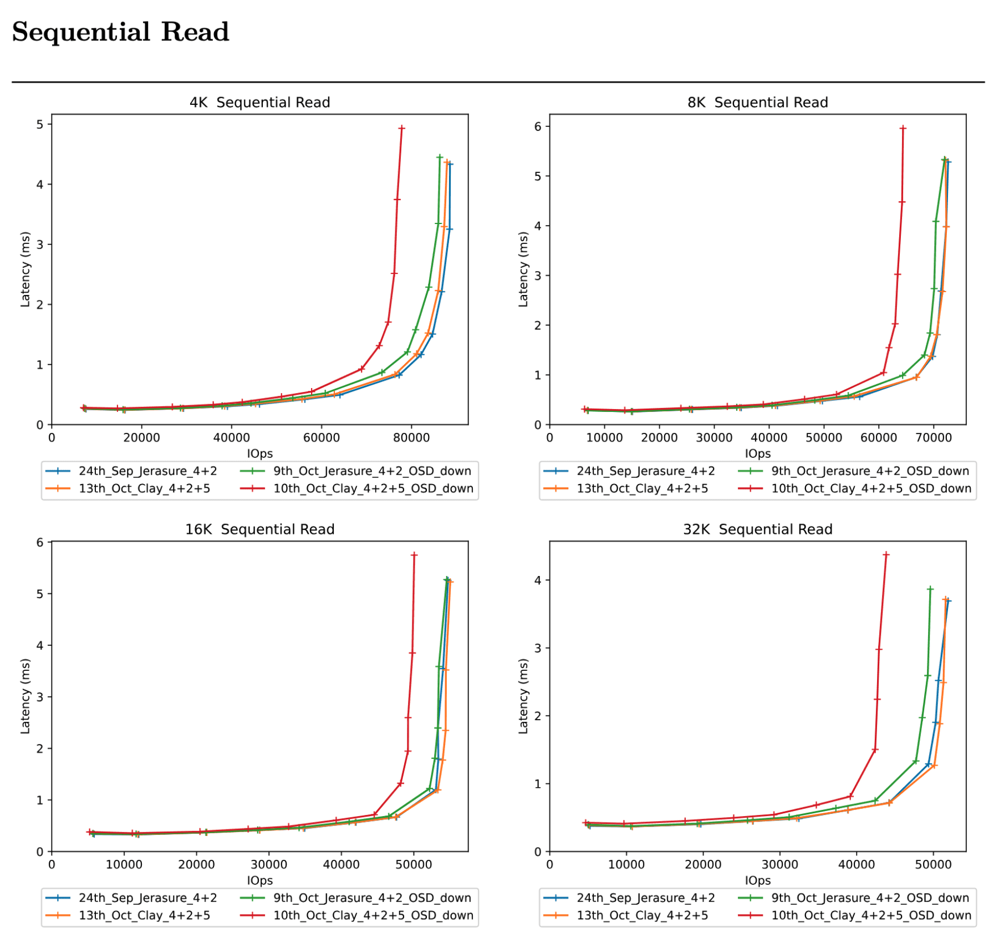

Benchmarking Performance with CBT: A guide to setup a Ceph cluster. Part One

CBT Performance Benchmarking - Part 1. What is CBT and how can we use it?
Outline of the Blog Series ¶
- Part 1 - How to start a Ceph cluster for a performance benchmark with CBT
- Part 2 - Defining YAML contents
- Part 3 - How to start a CBT performance benchmark
Contents:
- Introduction: What is CBT (Ceph Benchmarking Tool)?
- What do you have to consider when you are benchmarking storage systems?
- What are you looking to achieve from the performance benchmark?
- Starting up a ceph cluster for a performance benchmark
Introduction: What is CBT (Ceph Benchmarking Tool)? ¶
CBT can be used to standardise the performance evaluation process by:
- Simplifying the cluster creation process and having CBT do it
- Running a deterministic suite of tests with response curves (throughput vs latency) with a wide variety of workloads
- Tooling to automatically post process data from a performance benchmark and generate performance reports and comparison reports, ability to compare two or more (up to 6) response curve runs and identify differences in performance within the response curves
Here is an example of what a CBT comparison report would look like: (this will all be explained in more detail later, in part 3)

Now I understand that the above example curves could be a totally new concept for a lot of people so will go over the fundamentals of them:
- The perfect response curve would be a flat horizontal line showing constant latency as the quantity of I/O increases until we reach the saturation point. This is where we reach a bottleneck in the system, such as in CPU, network, drive utilisation or some other resource limitation which could also be in the software. At this point we would expect the curve to become a vertical line showing that attempting to do more I/O than the system can handle, just results in I/Os being queued and hence the latency increasing.
- In practice response curves are never perfect, a good response curve will have a fairly horizontal line with the latency increasing gradually as the I/O load increases, curving upwards towards a vertical line where we reach the saturation point.
- Our comparison curves will be explained in more detail in part 3 of the blog, so a basic understanding is more than fine for now.
The objective of this blog is to demonstrate how CBT (Ceph Benchmarking Tool) can be used to run tests for Ceph in a deterministic manner. It's also to show how to set up a Ceph cluster for use with CBT to make your life simpler by automating a lot of the manual effort that is required to set up a performance test.
For a real life example, this blog will try and answer the quesiton "Does using the CLAY erasure code plugin give better performance than using the default JErasure plugin?" showing how CBT can be used to conduct a set of experiments and produce reports to answer this question.
I hope you find this tutorial simple to understand and you will get to learn the benefits of using CBT to make your performance benchmarking a whole lot easier.
What do you have to consider when you are benchmarking storage systems? ¶
There are several aspects to consider when evaluating performance, the main aspect to consider is what is the goal of measuring performance, this may be:
- Regression testing a fix to see if performance has degraded or improved
- Regressing testing a build to see if other contributors have degraded performance
- Comparing a feature
- Comparing the effect of scale-up (adding more OSDs to a node) or scale-out (adding more nodes)
- Comparing the performance of one pool type over another
- The effect of additional network bandwidth
- The effect of upgrading CPU in a Ceph Node
Therefore you need to consider:
The results generated must be compared against a like-for-like system with the test repeated in the same way as the original results.
- This includes the same cpu, number of OSDs, drive type, number of RBD volumes, Ceph nodes, ethernet port/type.
- Even client attach is important.
- Two seamlessly like-for-like systems could produce varying performance results because one drive could have a different generation of Flash memory within it.
- So Ideally, to get like for like comparisons, tests need to be run on the same system.
The system must be prefilled (if applicable, perhaps not so important for Object/RGW evaluation) and preconditioned in the same way.
- Pre-filling involves filling the volume or pool with sequential writes prior to any performance benchmarking. Filling to 100% of the physical capacity is not needed, most production systems will have sufficient capacity available to allow for expansion. For benchmarking therefore, filling to around 50% of the physical capacity is sufficient for real world storage.
- Pre-conditioning is adding random overwrites after prefilling the system to simulate a real world application, to add some garbage collection/fragmentation since most production systems will have been running for many months/years and therefore will have generated many overwrites and updates to data written.
- A storage system that is almost empty will perform very differently from one that has a lot of data on it due to metadata access, garbage collection, fragmentation etc.
Same workload amount, e.g. 1M, 4k, 8k, 64k etc. And this has to be with the same sequential/random method.
There is always going to be some element of variance in the results, even if everything is done like for like.
This could be down to something as minimal as workload ordering, this can have an effect on performance of later workloads. For example, if you sequentially write then read, that will have significantly better performance than if you were to randomly write then sequentially read.- So if the test results in a pass, fail, you need to allow for variance, typically 10% is probably acceptable if you are just looking at the average performance during the duration of the time.
- The shorter the run time, the greater the degree of variance.
- Also to help minimise variance it’s important to pick an appropriate run time for each test, 5 minutes is usually a good amount.
Turning off the balancer, scrub, deep scrub, autoscaler will help generate more repeatable results as the performance benchmark will just be measuring client performance and not measuring any of the background processes in Ceph that can affect performance such as backfill, pg splitting/merging, and scrubbing. Leaving these features enabled will generate real world results, but likely will generate more variance and a few % difference in performance.
What are you looking to achieve from the performance benchmark? ¶
If the same performance test is repeated on the same system you want to be able to measure the same results (or with as little variance between runs as possible). This predictability is important if you are going to try and compare different configurations to see which is better.
Ideally you also want to be able to come back and run the same test 6 months later, on the same system, and get the same results. This is harder because things can change over time. Ideally, if someone configures an equivalent system to the one the performance test was run on you would like to get the same results. If done correctly, the amount of manual effort needed to regression test performance will be significantly reduced.
Starting up a ceph cluster for a performance benchmark ¶
For these blogs we will be focusing on using Cephadm to start our ceph clusters, though vstart or by hand are also feasible options. It's also important to note that I am using RBD volumes as the storage type with FIO as the IO exerciser interface. The same rules for capacity filling etc apply equally to other storage types, except the maths for calculating the pool size will differ.
This section will describe the basic steps to get a ceph cluster up and running, ready to start a performance benchmark.
Step 1: Setup
You will want to ssh into our machine that we will be using.
My system has the following setup:
- 6 Sata Drive SSD’s 210GB
- ceph version
20.3.0-2198-gb0ae68b0 (b0ae68b0ccceed5a913d81c5a8cb0b4e9c5a5f6b)tentacle (dev) - OS: Red Hat Enterprise Linux 9.6 (Plow)
Note: This is a single node system and you are running the IO client on the same system as Ceph. However, there is nothing stopping you from running CBT on a multi-node server. The YAML format allows it to SSH into Ceph nodes.
Step 2: Clean up
When you create a cluster using cephadm and run a CBT test, log files will be created in specified locations.
So if you have done a test before and know there will be old log files at a specific location, begin by deleting them, if you have never done a CBT run before, you can move onto Step 3: Building a container.
Now I will remove a previous cluster that I had running, so that I am starting from a clean slate.
There are 2 areas you will have to delete to complete this step:
Wherever the
tmp_dirline within your yaml file points to:tmp_dir: "/tmp/cbt"This directory contains the temporarily log files from the IO exercisor, eg the FIO json files.
The -a argument when you run a performance benchmark:
-a /tmp/cbtThis argument directory contains the performance results of the performance benchmark. As you can see, both my YAML and argument point to the same directory, so before my CBT run I will always make sure to:
rm -rf /tmp/cbt/*We delete these files as if you don't, CBT assumes there is already a run ongoing and CBT will attempt to protect the previous data and skip tests throughout the YAML.
Step 3: Building a container
Next you will have to get a build container that you are going to use to construct our ceph cluster. You can obtain this container id from Builds ceph. Click on your desired build and then copy the sha1, this is also known as the container id. The build I’m using can be seen within the Step 1: Setup section previously.
- You will now pull down the desired build container using podman
Click to see details for upstream
podman pull quay.ceph.io/ceph-ci/ceph:<sha1>
Make sure to paste your specific sha1 into the above command!
Note: The above is using the development build containers. You can also pull released build containers (for Squid/Reef etc), from here.
Click to see details for downstream
podman pull quay.ceph.io/ceph/ceph:v19.2.3
The above is an example for the latest squid build
podman pull quay.ceph.io/ceph/ceph:v20.1
The above is an example for the tentacle RC candidate
Step 4: Creating a cluster
Firstly, run command lsblk to see if there are any ceph partitions on the block devices you are going to use for ceph. If so, you will need to run the removevgs script below, to remove the volume groups:
Click here to see removevgs script
for i in /dev/ceph*
do
lvremove -y $i
done
Next, use cephadm with your container id you previously pulled down, to create your ceph cluster, like so:
cephadm --image quay.ceph.io/ceph-ci/ceph:<sha1> bootstrap --single-host-defaults --log-to-file --mon-ip <ip_of_node> --allow-mismatched-release
Of course replace sha1 and ip_of_node with your corresponding values. You are specifying the container image, using bootstrap to initialise a new Ceph cluster. --single-host-defaults is optimising the bootstrap for a single node, note that if you are creating a multi-node Ceph cluster, this option is not needed. --log-to-file makes Ceph daemons log to files on disk. --mon-ip tells what IP address to bind the first monitor to. --allow-mismatched-release lets you bootstrap with an image that does not match the cephadm version of the host.
It is also common in performance benchmarking to reset the system into a known state prior to starting any benchmarks because factors such as fragmentation of stored data can affect results. Therefore it is advisable to delete and recreate the cluster between every run.
Step 5: Configure cluster
Now you have a basic cluster setup, you can view your cluster to make sure it is up and running:ceph orch device lsto check all the OSDs you need are available- If not available, you have to use
ceph orch zap device <osd>to make them available. A script like this will solve the OSD unavailability problem:
Click to see zap OSD script
#! /bin/bash
file=/tmp/$$.out
out=/tmp/$$b.out
cephadm shell ceph orch device ls 2>&1 | grep ssd >$file
cat $file | while read -a line_array; do
host=${line_array[0]}
device=${line_array[1]}
echo ceph orch device zap ${host} ${device} --force >>$out
done
echo exit >>$out
cephadm shell <$out
rm -f $file
rm -f $out
- Next, you will create our Erasure Coding (EC) setup. This script can be customised however you’d like your EC setup to be, I will provide a simple example version of mine here:
Click to see details
ceph osd erasure-code-profile set reedsol plugin=isa k=4 m=2 technique=reed_sol_van stripe_unit=4K crush-failure-domain=osd
ceph osd pool create rbd_erasure 64 64 erasure reedsol
ceph osd pool create rbd_replicated 64 64 replicated
ceph osd pool set rbd_erasure allow_ec_overwrites true
ceph osd pool set rbd_erasure allow_ec_optimizations true
rbd pool init rbd_erasure
rbd pool init rbd_replicated
rbd create –pool rbd_replicated –data-pool rbd_erasure –size 10G test-image
It's very important to take a note of the volume name and pool name you create, in my example above this is test-image and rbd_replicated respectively. As we are creating an erasure coded profile set up, we use the replicated pool name. (In part 2 within the Benchmark Module section you will need to refer to these names)
So the above is an example of a similar script to what I run. It defines a 4 + 2 EC profile named reedsol. An EC profile is essentially a template that defines how Ceph should encode and store data using EC. You create two pools (rbd_erasure & rbd_replicated), enable EC overwrites and EC optimisations, then initialise pools and create an RBD image backed by the EC pool.
Within creating the EC setup you will be:
- Defining the amount of data OSDs (k) and parity OSDs (m)
- Defining the size of your drives
- Defining the percentage of prefill
- Defining the number of volumes
- Defining the volume size
- Defining the EC profile, specifying the plugin, technique, stripe width etc
- Creating your EC pool
My EC (Erasure Coding) setup is as follows:
- 4 + 2 setup (k=4, m=2)
- 210gb drive size
- 50% prefill
- 8 volumes
- 52.5gb volume size
- Single EC pool
- Chunk size = 4K
Now you have set up and configured an erasure coded ceph cluster!
I will go a bit more in depth here regarding prefilling, as mentioned above you are aiming to prefill 50% of the physical capacity. You need to choose a working set, (the amount of logical capacity to utilise over during the course of the benchmark) is very important, this is so that all the IO doesn't just go straight into cache in systems with large amounts of memory. Therefore, it is important to have the total working set to be significantly larger than the RAM in the system.
In this example you are using RBD volumes with erasure coding. This is the calculation you would do to find out how much you need to write to fill the physical capacity to 50% (this is represented by 0.5), this is known as the RBD Volume size. (Physical drive size * K * 0.5 / No. of volumes Therefore for our example above, you would get: (210000 * 4 * 0.5) / 8 Therefore the RBD Volume size = 52500 (52.5GB)
You can then calculate the total working set, by doing: RBD Volume size * No. of volumes Which would result in, for our example: 52500 x 8 Therefore the working set = 420000 (420GB)
You can see here for our example that the working set is 420GB and the RAM is 210GB therefore this is satisfactory.
If you are not using RBD volumes with EC and you are using Replica pools instead, the maths would look like this, to get the RBD Volume size: (Physical drive size * Number of OSDS / Number of copies * 0.5) / Number of Volumes
Now move onto Part 2 of the blog if you so wish, where you can take a look at defining a YAML file that will outline the workloads (tests) that you will be running on your ceph cluster!